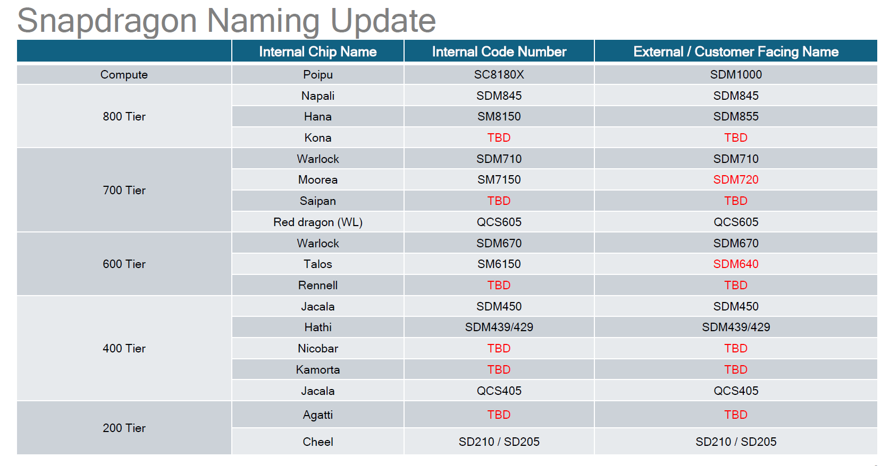
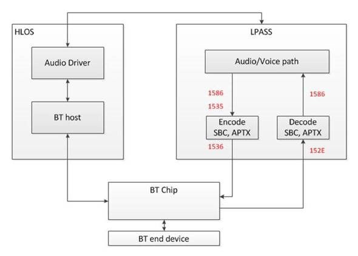
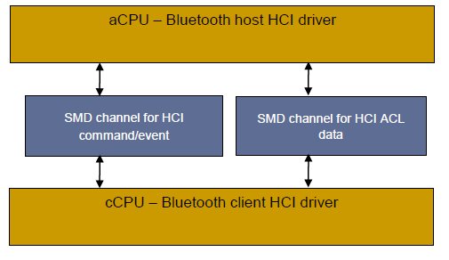
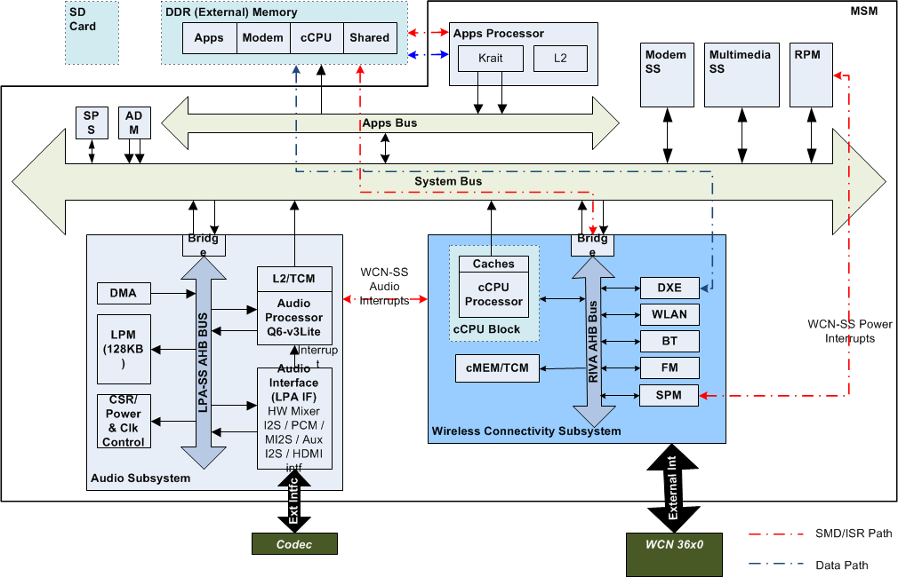
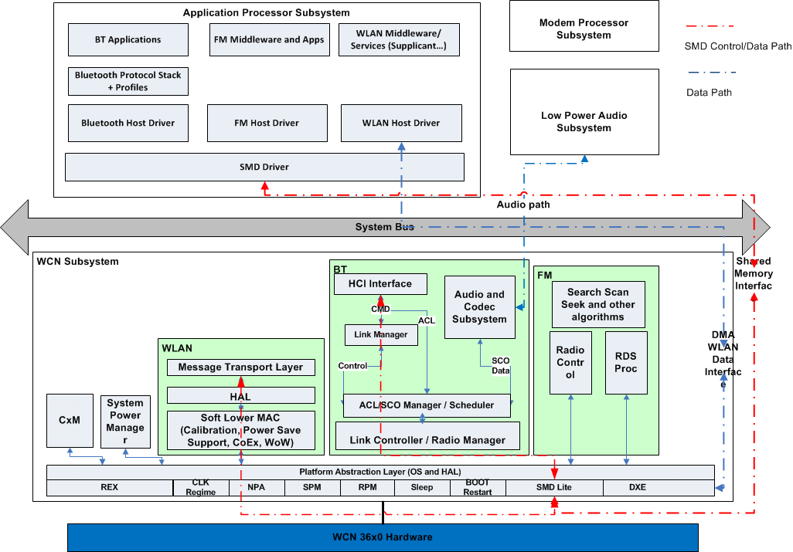

QC平台知识库 for BT codec issue for general issue Android N Android O
Table of Contents
1 Burn Image
1.1 Flash QRD
Steps:
adb root adb reboot-bootloader pushd \\network_path python fastboot_complete.py [Wait for fastboot build download finish] fastboot reboot
download QCN:
adb shell setprop persist.radio.multisim.config ssss
down完QCN以后，然后手机会reboot， 如果没识别的话，你就发这个命令下去 再reboot一下.
1.2 Update an Image part
command format: fastboot.exe flash bluetooth_a abl.elf
| part name(Android P) | file name |
|---|---|
| abl_a | abl.elf |
| bluetooth_a | BTFW.bin |
| boot_a | boot.img |
| cmnlib64_a | cmnlib64.mbn |
| cmnlib_a | cmnlib.mbn |
| devcfg_a | devcfg.mbn |
| dsp_a | dspso.bin |
| hyp_a | hyp.mbn |
| keymaster_a | km4.mbn |
| logfs | logfs_ufs_8mb.bin |
| logfs | logfs_ufs_8mb.bin |
| mdtp_a | mdtp.img |
| modem_a | NON-HLOS.bin |
| pmic_a | pmic.elf |
| rpm_a | rpm.mbn |
| system_a | system.img |
| persist | persist.img |
| userdata | userdata.img |
| storsec | storsec.mbn |
| mdtpsecapp | mdtpsecapp.mbn |
| tz_a | tz_a.mbn |
| vendor_a | vendor.img |
| xbl_a | xbl.elf |
2 Factory Test
2.1 BT Config
For Android O, 先在UI上把BT关掉然后执行
wdsdaemon -su
然后是btconfig。
adb root adb shell setprop qcom.bluetooth.soc pronto adb shell setprop ro.qualcomm.bt.hci_transport smd wdsdaemon -su (no need for Pronto)
open another cmd window
btconfig /dev/smd3 rawcmd 0x03 0x0003 (HCI Reset) btconfig /dev/smd3 rawcmd 0x06 0x03 （Enter Test Mode进入测试模式） btconfig /dev/smd3 rawcmd 0x03 0x05 0x02 0x00 0x02 （Auto Accept All Connections自动连接） btconfig /dev/smd3 rawcmd 0x03 0x1A 0x03 （Page Inquiry Scans按页扫描） btconfig /dev/smd3 rawcmd 0x03 0x20 0x00 （Disable Authentication取消认证） btconfig /dev/smd3 rawcmd 0x03 0x22 0x00 （Disable Encryption取消加密）
2.2 工程模式下写入和读取BD ADDR
#Write BD ADDRR btconfig /dev/smd3 rawcmd 0x3f 000b 0x01 0x02 0x06 0x00 0x55 0x77 0x77 0x88 0x00 SOC is WCN Done intiailizing fd = /dev/smd3 RAW HCI command: ogf 0x3f ocf 0xb Params: 0x1 0x2 0x6 0x0 0x55 0x77 0x77 0x88 0x0 SEND -> dump : 0b fc 09 01 02 06 00 55 77 77 88 00 Other event received, Breaking RECV <- dump : ff 0a 0b 01 02 06 00 55 77 77 88 00 #Read BD ADDDR btconfig /dev/smd3 rawcmd 0x04 0x0009 SOC is WCN Done intiailizing fd = /dev/smd3 RAW HCI command: ogf 0x4 ocf 0x9 Params: SEND -> dump : 09 10 00 Other event received, Breaking RECV <- dump : 0e 0a 01 09 10 00 00 55 77 77 88 00
4 Snapdragon Naming Update

5 Slimbus
5.1 Architecture

5.2 Turn on logs
adb root adb wait-for-device remount adb shell echo -n "file btfm_slim_codec.c +pf" ">" /sys/kernel/debug/dynamic_debug/control adb shell echo -n "file btfm_slim.c +pf" ">" /sys/kernel/debug/dynamic_debug/control adb shell echo -n "file btfm_slim_wcn3990.c +pf" ">" /sys/kernel/debug/dynamic_debug/control #Important Logs for SCO issue. 071376 07-06 20:51:13.035 D/btfm_slim_dai_hw_params( 0): dai->name = btfm_bt_sco_a2dp_slim_rx DAI-ID 2 rate 16000 num_ch 1 071401 07-06 20:51:13.043 I/btfm_slim_enable_ch( 0): slim_connect_sink(port: 16, ch: 157) 071567 07-06 20:51:13.102 D/btfm_slim_dai_prepare( 0): dai->name: btfm_bt_sco_slim_tx, dai->id: 1, dai->rate: 16000 071587 07-06 20:51:13.106 I/btfm_slim_chrk_enable_port( 0): programming SCO Tx with reg_val 3 to reg 0x50 071593 07-06 20:51:13.107 I/btfm_slim_enable_ch( 0): slim_connect_src(port: 0, ch: 161)
adb shell echo -n "file bluetooth-power.c +p" ">" /sys/kernel/debug/dynamic_debug/control adb shell echo -n "file msm_serial_hs.c +p" ">" /sys/kernel/debug/dynamic_debug/control adb shell echo -n "file slim-msm-ctrl.c +p" ">" /sys/kernel/debug/dynamic_debug/control adb shell echo -n "file slim-msm-ngd.c +p" ">" /sys/kernel/debug/dynamic_debug/control adb shell echo -n "file slim-msm.c +p" ">" /sys/kernel/debug/dynamic_debug/control adb shell echo -n "file btfm_slim_codec.c +pf" ">" /sys/kernel/debug/dynamic_debug/control adb shell echo -n "file btfm_slim.c +pf" ">" /sys/kernel/debug/dynamic_debug/control adb shell echo -n "file btfm_slim_wcn3990.c +pf" ">" /sys/kernel/debug/dynamic_debug/control adb shell echo -n "file q6adm.c +p" ">" /sys/kernel/debug/dynamic_debug/control adb shell echo -n "file q6afe.c +p" ">" /sys/kernel/debug/dynamic_debug/control adb shell echo -n "file q6asm.c +p" ">" /sys/kernel/debug/dynamic_debug/control adb shell echo -n "file q6voice.c +p" ">" /sys/kernel/debug/dynamic_debug/control adb shell echo -n "file soc-dapm.c +p" ">" /sys/kernel/debug/dynamic_debug/control adb shell echo -n "file msm-pcm-voip-v2.c +p" ">" /sys/kernel/debug/dynamic_debug/control adb shell echo -n "file msm-pcm-routing-v2.c +p" ">" /sys/kernel/debug/dynamic_debug/control adb shell echo -n "file msm-pcm-voice-v2.c +p" ">" /sys/kernel/debug/dynamic_debug/control adb shell echo -n "file msm-pcm-q6-v2.c +p" ">" /sys/kernel/debug/dynamic_debug/control adb shell echo -n "file msm-dai-q6-v2.c +p" ">" /sys/kernel/debug/dynamic_debug/control adb shell echo -n "file msmcobalt.c +p" ">" /sys/kernel/debug/dynamic_debug/control adb shell echo -n "file voice_svc.c +p" ">" /sys/kernel/debug/dynamic_debug/control
6 Uart ipc logs
<for SDM845 UART IPC> > cat /d/ipc_logging/898000.qcom,qup_uart_misc/log_cont >> /sdcard/uart_misc.ipc & > cat /d/ipc_logging/898000.qcom,qup_uart_pwr/log_cont >> /sdcard/uart_pwr.ipc & > cat /d/ipc_logging/898000.qcom,qup_uart_tx/log_cont >> /sdcard/uart_tx.ipc & > cat /d/ipc_logging/898000.qcom,qup_uart_rx/log_cont >> /sdcard/uart_rx.ipc &
一般客户在sdm845上都是用898000这个uart连接BT， 所以上面路径就可以.
7 BT
7.1 Split A2DP Common feature Turn On/Off
- Set “AUDIO_FEATURE_ENABLED_SPLIT_A2DP := false” in “hardware/qcom/audio/configs/sdmxxx/sdmxxx.mk” then build software.
- File case to Audio team to get the corresponding non-split A2DP <audio_policy_configuration.xml> file for your platform
- Run the following commands.
adb push audio_policy_configuration.xml /system/etc/audio_policy_configuration.xml adb shell setprop persist.bt.enable.splita2dp false adb shell setprop persist.vendor.bt.enable.splita2dp false #new add. adb shell setprop persist.bt.a2dp_offload_cap false adb shell setprop persist.vendor.bt.a2dp_offload_cap false adb shell sync adb reboot
7.2 Disable BT Soc Logging
To disable SoC logging please make the below change @ vendor/qcom/proprietary/bluetooth/hidl_transport/bt/1.0/default/patch_dl_manager.cpp?
void PatchDLManager::EnableControllerLog()
{
#ifdef USER_DEBUG
// value at cmd[5]: 1 - to enable, 0 - to disable
cmd[5] = 0x00; // please change it to 0
#else
......
}
7.3 QDID Listings
- Stack and Profile
- MSM™ chipset
https://www.bluetooth.org/tpg/QLI_viewQDL.cfm?qid=20783
(for WCN3620) https://www.bluetooth.org/tpg/QLI_viewQDL.cfm?qid=21332
(for WCN3660, WCN3680) https://www.bluetooth.org/tpg/QLI_viewQDL.cfm?qid=18867
- QCA chipset
7.4 APQ8909(WCN36XX)
- Bluetooth/FM HCI-SMD Interface

- Between cCPU and aCPU
- Two SMD channels are used for Bluetooth HCI commands and events, HCI ACL data transfers
- One SMD channel for FM control commands and events
- One SMD channel for the WCN-SS debug logging shared by WLAN, Bluetooth, and FM
- Property
ro.qualcomm.bt.hci_transport: smdis set only for PRONTO.
7.5 Enable/disable Bluetooth
one way to enable/disable BT with adb shell. It is just same as operation from GUI. Details is as follows:
adb shell service call service: No code specified for call Usage: service [-h|-?] service list service check SERVICE service call SERVICE CODE [i32 N | i64 N | f N | d N | s16 STR ] ... Options: i32: Write the 32-bit integer N into the send parcel. i64: Write the 64-bit integer N into the send parcel. f: Write the 32-bit single-precision number N into the send parcel. d: Write the 64-bit double-precision number N into the send parcel. s16: Write the UTF-16 string STR into the send parcel.
The CODE means sequence number of function in the AIDL file:
frameworks/base/core/java/android/bluetooth/IBluetoothManager.aidl
interface IBluetoothManager
{
IBluetooth registerAdapter(in IBluetoothManagerCallback callback);
void unregisterAdapter(in IBluetoothManagerCallback callback);
void registerStateChangeCallback(in IBluetoothStateChangeCallback callback);
void unregisterStateChangeCallback(in IBluetoothStateChangeCallback callback);
boolean isEnabled();
boolean enable(String packageName);
boolean enableNoAutoConnect(String packageName);
boolean disable(String packageName, boolean persist);
int getState();
IBluetoothGatt getBluetoothGatt();
boolean bindBluetoothProfileService(int profile, IBluetoothProfileServiceConnection proxy);
void unbindBluetoothProfileService(int profile, IBluetoothProfileServiceConnection proxy);
String getAddress();
String getName();
boolean factoryReset();
boolean isBleScanAlwaysAvailable();
int updateBleAppCount(IBinder b, boolean enable, String packageName);
boolean isBleAppPresent();
}
Since Android N and Android O has different interface, there are difference command.
adb shell service call bluetooth_manager 8 adb shell service call bluetooth_manager 10
adb shell service call bluetooth_manager 6 s16 "com.android.bluetooth" #Enable adb shell service call bluetooth_manager 8 s16 "com.android.bluetooth" #Disablle
7.6 Power Class Adjustment
for pronto, power class can be changed in the source code.
@vendor/qcom/proprietary/bluetooth/hidl_transport/bt/1.0/default/nvm_tags_manager.cpp
98 /* Tag 36 */ /* External Power Configuration */
99 { /* Opcode */ 0x0b,0xfc,
100 /* Total Len */ 0x0F,
101 /* NVM CMD */ NVM_ACCESS_SET,
102 /* Tag Num */ 0x24,
103 /* Tag Len */ 0x0C,
104 /* Tag Value */ 0xFF, 0x03, 0x07, 0x09, 0x09, 0x09, 0x00, 0x00,
105 0x09, 0x09, 0x04, 0x00
106 },
for Cheroke, we should change the value in the crnv21.bin file.
7.7 change the BT MAC address
- Please use following ADB command to set the BD address.
setprop persist.service.bdroid.bdaddr <BD address>.
- Make sure the changes take effect
getprop persist.service.bdroid.bdaddr
- Turn OFF and Turn ON BT
8 Pronto(WCN36XX)
8.1 WCN36x0 Architecture

To update WCNSS firmware images during debugging/development stage
adb shell mount –o remount –w /firmware
adb push {firmware images} /firmware/image
adb shell sync;reboot

Figure 5: WCN-SS High-Level Software Diagram
- Device Adaptation Layer (DAL)
- DAL is a SW framework to provide the common API for the platform agnostic
- A common shim layer that provides DALs access to the OS services in a way that is OS neutral
- The implementation of the DALSysis OS dependent however that is transparent to the DALSysusers
- Simple and efficient, scalable to the environment
- It decouples the stacks from the low level microkernel running on WCNSS cCPU
- DALSys provides the basic necessary OS services that the connectivity software need: DAL interrupt controller, DAL Timer, and DAL timetick
- CoreBSP –DALSys / REX
- DALSys
- A common shim layer that provides DAL access to the OS services in a way that is OS-neutral
- The implementation of the DALSys is OS-dependent; however, that is transparent to DALSysusers.
- Decoupling the stacks from the low-level microkernel running on the cCPU can help maximize portability of WLAN, Bluetooth, and FM modules.
- Kernel Services provided by DALSys
- Synchronization (interrupt, mutexor critical sections)
- Events and callbacks
- Memory and cache operations
- Physical memory manipulation
- Shared execution contexts Workloops(shared threads)
- The underlying RTOS for DALSysis REX
- REX is small (~4K), highly predictable (executed code is well defined), low latency in interrupt processing and can bring all the services that WCNSS needs.
- The core BT SOC software functionalities are divided in below major
Software modules.
- HIF TASK
This task is responsible for providing the HCI interface between BT Host software and BT Firmware. It implements the HCI driver for the various transports like UART and or SMD and provides a complete abstract HCI Statemachine (using Platform Abstraction Layer -PFAL) which can handle the HOST/BTSOC HCI commands/events and ACL data over the HCI transport driver.
- LLM TASK
This is the core of the Bluetooth Firmware which is responsible for maintaining the Bluetooth Link and its control. This task is responsible for creating and maintaining all logical links like ACL-C, SCO/eSCO and implements Link Manager Protocol of BR/EDR and Link Layer Protocol for LE physical links. It interfaces mainly with HIF using message queues to exchange data and operate on the commands and responses.
- Audio Codec Subsystem
This module runs under ISR context and handles LPASS, LC and Timer interrupts to provide the encoding/decoding the voice PCM data to be RX/TX over the SCO/eSCO logical transports. It supports of CVSD/MSBC (voice) and SBC (music) decoder. At present, this module mainly targets the Voice and FM data transfer to and from LPASS using CMEM memory controller.
- BT Scheduler/Dispatcher
The core module to dispatch and schedule BT Baseband packets delivered from LLM or HIF task. This module runs in ISR context and mainly handles the LC hardware interrupts to process and schedule next packet to transmit. For this scheduling, it manages various priority queues for all Bluetooth Physical Channels (PAGE, INQUIRY, BR, EDR etc.). The scheduling is always driven based on Bluetooth Native clock and with slot intervals (half or full) of 625us. The packets to be transmitted can be queued by various modules along with their priority. On every slot based interrupts, the scheduler de queues them and readies it for TX operation.
- LC State Machine
This interface is mainly responsible to drive and control the BT LC hardware block or we can say that it is software Link Controller. It tries to mimic the LC hardware states and allows the BT firmware to program and access the LC registers required for any BT RF TX and TX and to know the current Hardware LC states. It runs under real time bound interrupts like Pre-slot, LC Done, CLK Comparator to provide the LC functionality to the BT firmware. The LC hardware block provides various memory addressable LC registers which can be configured to get the Baseband Data transfer. The LC block directly connects to Bluetooth Baseband Modem and radio interface.
- HIF TASK
- DALSys